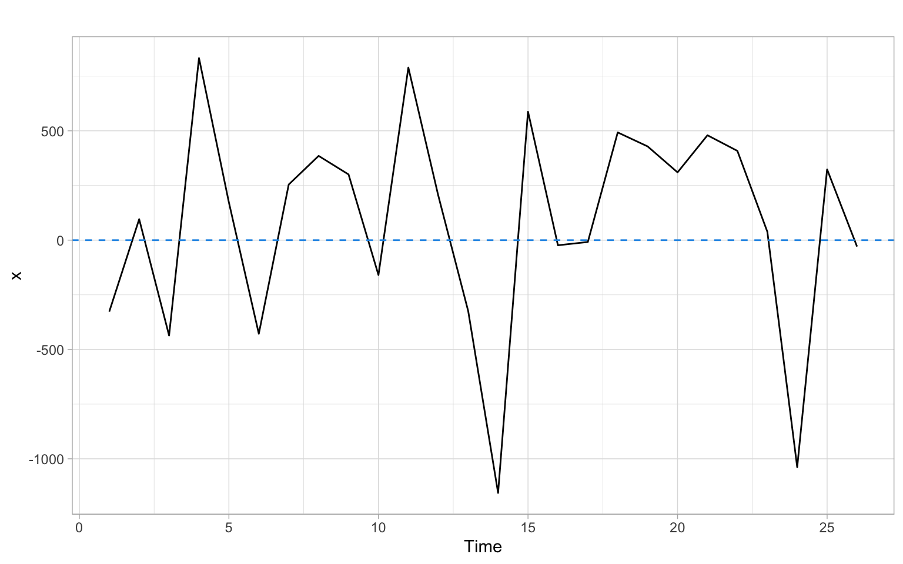
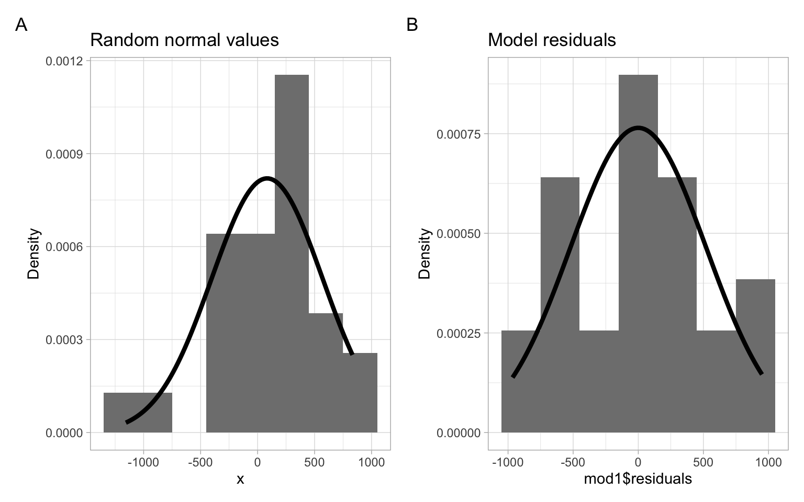

Code

After this lecture, you should be competent (again) in assessing violations of various assumptions of linear regression models, particularly assumptions about model residuals, by being able to apply visual assessments and formal statistical tests, and interpret the results and effects of the violations.
Objectives
Reading materials
Given a simple linear regression (SLR) model \[ Y_{t} = \beta_{0} + \beta_{1} X_{t} + \epsilon_{t}, \] where \(Y_{t}\) is the dependent variable and \(X_{t}\) is the regressor (independent, predictor) variable, \(t = 1,\dots,n\), and \(n\) is the sample size.
The Gauss–Markov theorem
If \(\epsilon_{t}\) are uncorrelated random variables with common variance, then of all possible estimators \(\beta^{\ast}_{0}\) and \(\beta^{\ast}_{1}\) that are linear functions of \(Y_{t}\), the least squares estimators have the smallest variance.
Thus, the ordinary least squares (OLS) assumptions are:
the residuals \(\epsilon_{t}\) have common variance (\(\epsilon_{t}\) are homoskedastic);
the residuals \(\epsilon_{t}\) are uncorrelated;
to provide prediction intervals (PIs), confidence intervals (CIs), and to test hypotheses about the parameters in our model, we also need to assume that
the residuals \(\epsilon_{t}\) are normally distributed (\(\epsilon_{t} \sim N (0, \sigma^{ 2} )\)).
If the residuals are independent and identically distributed and normal (\(\epsilon_{t} \sim\) i.i.d. \(N(0, \sigma^{2}\))), then all three above properties are automatically satisfied. In this case, \(\epsilon_{t}\) are not only uncorrelated but are independent. To be independent is a much stronger property than to be uncorrelated.
While a given model may still have useful predictive value even when the OLS assumptions are violated, the confidence intervals, prediction intervals, and \(p\)-values associated with the \(t\)-statistics will generally be incorrect when the OLS assumptions do not hold.
A basic technique for investigating the aptness of a regression model is based on analyzing the residuals \(\epsilon_{t}\). In a residual analysis, we attempt to assess the validity of the OLS assumptions by examining the estimated residuals \(\hat{\epsilon}_{1}, \dots, \hat{\epsilon}_{n}\) to see if they satisfy the imposed conditions. If the model is apt, the observed residuals should reflect the assumptions listed above.
We perform our diagnostics analysis from a step-by-step verification of each assumption. We start with visual diagnostics, then proceed with formal tests. A lot of useful diagnostic information may be obtained from a residual plot.
We plot the residuals \(\hat{\epsilon}_{t}\) vs. time, fitted values \(\hat{Y}_{t}\), and predictor values \(X_t\). If the assumption of constant variance is satisfied, \(\hat{\epsilon}_{t}\) fluctuate around the zero mean with more or less constant amplitude and this amplitude does not change with time, fitted values \(\hat{Y}_{t}\), and predictor values \(X_t\).
If the (linear) model is not appropriate, the mean of the residuals may be non-constant, i.e., not always 0. Figure 1.1 shows an example of a random pattern that we would like the residuals to have (no systematic patterns).

What can we notice in a residual plot?
Sometimes it is possible to transform the dependent or independent variables to remedy these problems, i.e., to get rid of the correlated residuals or to stabilize the variance (see Appendix A and Appendix B). Otherwise, we need to change (re-specify) the model.
A useful technique that can guide us in this process is to plot \(\hat{\epsilon}_{t}\) vs. \(\hat{Y}_{t}\) and \(\hat{\epsilon}_{t}\) vs. each predictor \(X_t\). Similarly to their time series plot, \(\hat{\epsilon}_{t}\) should fluctuate around the zero mean with more or less constant amplitude.
There are two major ways of checking normality. Graphical methods visualize differences between empirical data and theoretical normal distribution. Numerical methods conduct statistical tests on the null hypothesis that the variable is normally distributed.
Graphical methods
Graphical methods visualize the data using graphs, such as histograms, stem-and-leaf plots, box plots, etc. For example, Figure 1.4 shows a histogram of the simulated normally distributed data and the residuals from the dishwasher example with superimposed normal curves with the corresponding mean and standard deviation.
p1 <- ggplot(data.frame(x = x), aes(x = x)) +
geom_histogram(aes(y = after_stat(density)), binwidth = 300, fill = "grey50") +
stat_function(fun = dnorm,
args = list(mean = mean(x), sd = sd(x)),
col = 1, lwd = 1.5) +
ylab("Density") +
ggtitle("Random normal values")
p2 <- ggplot(x, aes(x = mod1$residuals)) +
geom_histogram(aes(y = after_stat(density)), binwidth = 300, fill = "grey50") +
stat_function(fun = dnorm,
args = list(mean = mean(mod1$residuals), sd = sd(mod1$residuals)),
col = 1, lwd = 1.5) +
ylab("Density") +
ggtitle("Model residuals")
p1 + p2 +
plot_annotation(tag_levels = 'A')
Another very popular graphical method of assessing normality is the quantile-quantile (Q-Q) plot. The Q-Q plot compares the ordered values of a variable with the corresponding ordered values of the normal distribution.
Q-Q plots can also be used to compare sample quantiles with quantiles of other, not normal, distribution (e.g., \(t\) or gamma distribution), or to compare quantiles of two samples (to assess if both samples come from the same, unspecified, distribution).
Let \(X\) be a random variable having the property that the equation \[ \Pr \left( X \leqslant x \right) = \alpha \] has a unique solution \(x = x_{(\alpha)}\) for each \(0 < \alpha < 1\). That is, there exists \(x_{(\alpha)}\) such that \[ \Pr \left( X \leqslant x_{(\alpha)} \right) = \alpha \tag{1.1}\] and no other value of \(x\) satisfies Equation 1.1. Then we will call \(x_{(\alpha)}\) the \(\alpha\)th (population) quantile of \(X\). Note that any normal distribution has this uniqueness property. If we consider a standard normal \(Z \sim N(0, 1)\), then some well-known quantiles are:
qnorm(0.5, mean = 0, sd = 1)
We call the 0.25th, 0.5th, 0.75th quantiles the first, the second, and the third quartiles, respectively. The quartiles divide our data into 4 equal parts.
Now suppose \(X \sim N (\mu, \sigma^{2})\). By standardizing to \(Z \sim N(0, 1)\), we obtain \[ \alpha = \Pr \left( X \leqslant x_{(\alpha)} \right) = \Pr \left( \frac{X - \mu}{ \sigma} \leqslant \frac{x_{(\alpha)} - \mu}{\sigma} \right) = \Pr \left( Z \leqslant \frac{x_{(\alpha)} - \mu}{ \sigma} \right) . \]
We also have \(\alpha = \Pr (Z \leqslant z_{(\alpha)} )\) by definition. It follows that \[ z_{(\alpha)} = \frac{x_{(\alpha)} - \mu}{ \sigma} ~~~~ \mbox{and hence} ~~~~ x_{(\alpha)} = \sigma z_{(\alpha)} + \mu. \]
Thus, if \(X\) is truly normal, a plot of the quantiles of \(X\) vs. the quantiles of the standard normal distribution should yield a straight line. A plot of the quantiles of \(X\) vs. the quantiles of \(Z\) is called a Q-Q plot.
Estimating quantiles from data
Let \(X_{1}, \dots, X_{n}\) be a sequence of observations. Ideally, \(X_{1}, \dots, X_{n}\) should represent i.i.d. observations but we will be happy if preliminary tests indicate that they are homoskedastic and uncorrelated (see the previous sections). We order them from the smallest to the largest and indicate this using the notation \[ X_{(1/n)} < X_{(2/n)} < X_{(3/n)} < \dots < X_{\left((n - 1)/n\right)} < X_{(n/n)}. \]
The above ordering assumes no ties, but ties can be quite common in data, even continuous data, because of rounding. As long as the proportion of ties is small, this method can be used.
Note that the proportion of observations less than or equal to \(X_{(k/n)}\) is exactly \(k/n\). Hence \(X_{(k/n)}\), called the \(k\)th sample quantile, is an estimate of the population quantile \(x_{(k/n)}\).
The normal Q-Q plot is obtained by plotting the sample quantiles vs. the quantiles of the standard normal distribution. The base-R function qqnorm() produces a normal Q-Q plot of data and the function qqline() adds a line that passes through the first and third quartiles. The R package ggplot2 has analogous functions ggplot2::stat_qq() and ggplot2::stat_qq_line(). The R packages car and ggpubr also draw Q-Q plots, but also add a point-wise confidence envelope with their functions car::qqPlot() (base-R plot) and ggpubr::ggqqplot() (ggplot-type plot).
Although visually appealing, these graphical methods do not provide objective criteria to determine the normality of variables.
Shapiro–Wilk normality test
One of the most popular numerical methods for assessing normality is the Shapiro–Wilk (SW) test:
The SW test is the ratio of the best estimator of the variance to the usual corrected sum of squares estimator of the variance. It has been originally constructed by considering the regression of ordered sample values on corresponding expected normal order statistics. The SW statistic is given by \[ \mbox{SW} = \frac{\left(\sum a_{i} x_{(i)} \right)^{2}}{\sum \left(x_{i} - \bar{x} \right)^{2}}, \] where \(x_{(i)}\) are the ordered sample values (\(x_{(1)}\) is the smallest) and the \(a_{i}\) are constants generated from the means, variances, and covariances of the order statistics of a sample of size \(n\) from a normal distribution. The SW statistic lies between 0 and 1. If the SW statistic is close to 1, this indicates the normality of the data. The SW statistic requires the sample size \(n\) to be between 7 and 2000.
Here we consider a case of \(p\) explanatory variables \[ Y_{t} = \beta_{0} + \beta_{1} X_{t,1} + \dots + \beta_{p} X_{t,p} + \epsilon_{t} \quad (t = 1,\dots,n). \]
This can be expressed more compactly in a matrix notation as \[ \boldsymbol{Y} = \boldsymbol{X} \boldsymbol{\beta} + \boldsymbol{\epsilon}, \] where \(\boldsymbol{Y} = (Y_{1}, \dots, Y_{n})^{\top}\), \(\boldsymbol{\beta} = (\beta_{0} , \dots, \beta_{p})^{\top}\), \(\boldsymbol{\epsilon} = (\epsilon_{1} , \dots, \epsilon_{n})^{\top}\); \(\boldsymbol{X}\) is an \(n \times (p + 1)\) design matrix \[ \boldsymbol{X} = \left( \begin{array}{cccc} 1 & X_{1,1} & \dots & X_{1,p} \\ 1 & X_{2,1}& \dots & X_{2,p} \\ \vdots & \vdots & \ddots & \vdots \\ 1 & X_{n,1}& \dots & X_{n,p} \end{array} \right). \]
Here the historical dataset for the dependent variable consists of the observations \(Y_{1}, \dots, Y_{n}\); the historical dataset for the independent variables consists of the observations in the matrix \(\boldsymbol{X}\).
Minimizing \(SSE =(\boldsymbol{Y} - \boldsymbol{X} \hat{\boldsymbol{\beta}})^{\top} (\boldsymbol{Y} - \boldsymbol{X} \hat{\boldsymbol{\beta}})\) yields the least squares solutions \[ \hat{\boldsymbol{\beta}} = \left( \boldsymbol{X}^{\top} \boldsymbol{X} \right)^{-1} \boldsymbol{X}^{\top} \boldsymbol{Y} \] for non-singular \(\boldsymbol{X}^{\top}\boldsymbol{X}\).
The forecast of a future value \(Y_{t}\) is then given by \[ \hat{Y}_{t} = \boldsymbol{x}^{\top}_{t} \hat{\boldsymbol{\beta}}, \] where \(\boldsymbol{x}_{t}\) is a (column) vector at the time \(t\).
Under the OLS assumptions (recall them), we obtain \[ \mathrm{var} \left( \hat{\beta}_{j} \right) = \sigma^{2} \left( \boldsymbol{X }^{\top} \boldsymbol{X} \right)^{-1}_{jj}, \] where the \(\left( \boldsymbol{X}^{\top} \boldsymbol{X} \right)^{-1}_{jj}\) denotes the \(j\)th diagonal element of \(\left( \boldsymbol{X }^{\top} \boldsymbol{X} \right)^{-1}\).
This yields \[ s.e. \left( \hat{\beta}_{j} \right) = \hat{\sigma} \sqrt{ \left( \boldsymbol{X }^{\top} \boldsymbol{X} \right)^{-1}_{jj}}. \]
Note that here the degrees of freedom (d.f.) are \(n - (p + 1) = n - p - 1\). (The number of estimated parameters for the independent variables is \(p\), plus one for the intercept, i.e., \(p + 1\).)
Under the OLS assumptions, a \(100(1 - \alpha)\)% confidence interval for the parameter \(\beta_{j}\) (\(j = 0, 1, \dots, p\)) is given by \[ \begin{split} \hat{\beta}_{j} &\pm t_{\alpha / 2, n - (p+1)} s.e.\left( \hat{\beta}_{j} \right) \text{ or} \\ \hat{\beta}_{j} &\pm t_{\alpha / 2, n - (p+1)} \hat{\sigma} \sqrt{\left( \boldsymbol{X}^{\top} \boldsymbol{X} \right)^{-1}_{jj}}. \end{split} \tag{1.2}\]
Typically, \(s.e.(\hat{\beta}_{j})\) is available directly from the R output, so Equation 1.2 is calculated automatically.
Under the OLS assumptions, it can be shown that \[ \mathrm{var} \left( Y_{t} - \hat{Y}_{t} \right) = \sigma^{2} \left( \boldsymbol{x}^{\top}_{t} \left( \boldsymbol{X}^{\top} \boldsymbol{X} \right)^{- 1} \boldsymbol{x}_{t} + 1 \right), \] yielding a \(100(1 - \alpha)\)% prediction interval for \(Y_{t}\): \[ \boldsymbol{x}^{\top}_{t} \hat{\boldsymbol{\beta}} \pm t_{\alpha / 2, n-(p+1)} \hat{\sigma} \sqrt{ \boldsymbol{x}^{\top}_{t} \left( \boldsymbol{X}^{\top} \boldsymbol{X} \right)^{-1}\boldsymbol{x}_{t} + 1}. \]
We usually never perform these calculations by hand and will use the corresponding software functions, e.g., using the function predict(), see an example code below.
What else can we get from the regression output?
As in SLR, we will look for the \(t\)-statistics and \(p\)-values to get an idea about the statistical significance of each of the predictors \(X_{t,1}, X_{t,2}, \dots, X_{t,p}\). The confidence intervals constructed above correspond to individual tests of hypothesis about a parameter, i.e., \(H_{0}\): \(\beta_{j} = 0\) vs. \(H_{1}\): \(\beta_{j} \neq 0\).
We can also make use of the \(F\)-test. The \(F\)-test considers all parameters (other than the intercept \(\beta_{0}\)) simultaneously, testing \[ \begin{split} H_{0}{:} ~ \beta_{1} &= \dots = \beta_{p} = 0 ~~~ \text{vs.} \\ H_{1}{:} ~ \beta_{j} &\neq 0 ~~~ \mbox{for at least one} ~~~ j \in \{1, \dots, p \}. \end{split} \]
Formally, \(F_{\rm{obs}} = \rm{MSR/MSE}\) (the ratio of the mean square due to regression and the mean square due to stochastic errors).
We reject \(H_{0}\) when \(F_{\rm{obs}}\) is too large relative to a cut-off point determined by the degrees of freedom of the \(F\)-distribution. The \(p\)-value for this \(F\)-test is provided in the lm() output. Rejecting \(H_{0}\) is equivalent to stating that the model has some explanatory value within the range of the data set, meaning that changes in at least some of the explanatory \(X\)-variables correlate to changes in the average value of \(Y\).
Recall that \[ \begin{split} \mathrm{SST} &= \sum_{i=1}^n(Y_t-\overline{Y})^2= \mathrm{SSR} + \mathrm{SSE},\\ \mathrm{SSE} &=\sum_{t=1}^n(Y_t-\hat{\beta}_0 - \hat{\beta}_1 X_{t,1}-\dots- \hat{\beta}_p X_{t,p}) \end{split} \] and, hence, \[ \rm{SSR}=\rm{SST}-\rm{SSE}. \]
To conclude that the model has a reasonable fit, however, we would additionally like to see a high \(R^{2}\) value, where \[ R^{2} = \rm{SSR/SST} \] is the proportion of the total sum of squares explained by the regression.
Small \(R^{2}\) means that the stochastic fluctuations around the regression line (or prediction equation) are large, making the prediction task difficult, even though there may be a genuine explanatory relationship between the average value \(\mathrm{E}(Y)\) and some of the \(X\)-variables.
Another criterion to judge the aptness of the obtained model is the adjusted \(R^2\): \[ R^2_{adj}=1-\frac{n-1}{n-p}\left( 1-R^2 \right). \]
Unlike \(R^2\) itself, \(R^2_{adj}\) need not increase if an arbitrary (even useless) predictor is added to the model because of the correction \((n-1)/(n-p)\).
The intercept \(\beta_{0}\) is not included in the \(F\)-test because there is no explanatory variable associated with it. In other words, \(\beta_{0}\) does not contribute to the regression part of the model.
Even though not all OLS assumptions are satisfied we shall consider how to predict the future values of \(Y\) and to construct the prediction intervals using R.
For example, assume that we need to predict the future unit factory shipments of dishwashers (DISH) based on the private residential investment of 100 billion USD and durable goods expenditures of 150 billion USD.
Supply new values of independent variables and use the function predict().
newData <- data.frame(RES = c(100), DUR = c(150))
predict(mod2, newData, se.fit = TRUE, interval = "prediction")#> $fit
#> fit lwr upr
#> 1 5559 4227 6891
#>
#> $se.fit
#> [1] 521
#>
#> $df
#> [1] 23
#>
#> $residual.scale
#> [1] 378We have recalled the standard assumptions about residuals of linear regression models. Remember that there are some other assumptions (e.g., about linear independence of predictors) that must be verified. Refer to the reading materials for a complete list.
The methods we have used to test the homogeneity of residuals included various residual plots. The normality of residuals can be assessed using histograms or Q-Q plots and statistical tests such as the Shapiro–Wilk normality test.
The use of time series in regression presents additional ways to assess patterns in the regression residuals. A plot of residuals vs. time is assessed for homogeneity and absence of trends. Less obvious patterns, such as autocorrelation, can be tested with parametric and nonparametric tests, such as the Durbin–Watson and runs tests.
The statistical techniques we will learn aim to model or extract as much information from time series (including the autocorrelation of regression residuals) as possible, such that the remaining series are completely random.
Alternative versions of the runs test are available, e.g., in the package randtests.
randtests::runs.test(mod2$residuals)#>
#> Runs Test
#>
#> data: mod2$residuals
#> statistic = -4, runs = 5, n1 = 13, n2 = 13, n = 26, p-value = 3e-04
#> alternative hypothesis: nonrandomnessDifference sign test
The logic behind the difference sign test is that in a random process, there will be roughly the same number of ups (positive differences between consecutive values, i.e., \(X_t-X_{t-1}\)) and downs (negative differences).
Brockwell and Davis (2002): “The difference-sign test must be used with caution. A set of observations exhibiting a strong cyclic component will pass the difference-sign test for randomness since roughly half of the observations will be points of increase.” We may see (Figure 1.2 and Figure 1.6), it is the case for our residuals, even though we have no cyclic component, but have a rise followed by a decline.
randtests::difference.sign.test(x)#>
#> Difference Sign Test
#>
#> data: x
#> statistic = -2, n = 26, p-value = 0.1
#> alternative hypothesis: nonrandomnessrandtests::difference.sign.test(mod1$residuals)#>
#> Difference Sign Test
#>
#> data: mod1$residuals
#> statistic = 0.3, n = 26, p-value = 0.7
#> alternative hypothesis: nonrandomnessrandtests::difference.sign.test(mod2$residuals)#>
#> Difference Sign Test
#>
#> data: mod2$residuals
#> statistic = -0.3, n = 26, p-value = 0.7
#> alternative hypothesis: nonrandomness